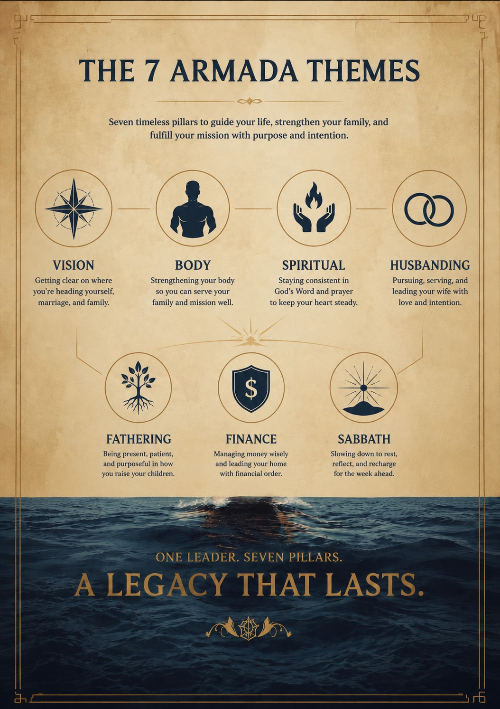

7 weeks. One plan. Each Captain with Christ at the center.
A 7-week boot camp for the captain at home. Vision, marriage, fathering, spiritual rhythm, body, finances, sabbath — with AI as the leverage, not the point. Claude and Cowork primary, on the bridge as a trusted aide and not the autopilot.
This isn't a chatbot bootcamp. It's leadership formation. We teach men how to use AI without losing themselves to it. Every week opens and closes in Scripture. AI drafts. The captain decides.
Husband, father, brother. Tools serve the home; they never compete with it.
Solo founder, steward of time. Leverage as a tithe of time, not a brag.
Captain, servant, multiplier. Train the next captain (2 Tim 2:2).
Seven themes orbit the captain. Each week, one moves to center.

Each week's section page features that week's themed Armada view.
Three formats, same content. Pick the one that fits your moment — a quiet evening, a long commute, or a coffee at the kitchen table.
Two officers debriefing the bootcamp framework — the 7-week shape, the tiered-autonomy posture, and what makes this different from generic AI training. About 14 minutes — for the captain on a commute or a walk.
A visual briefing of the 7-week framework. Print it, hand it to a brother, or read it on a tablet.
The whole bootcamp runs in a private Heartbeat circle — no Mighty Networks, no Discord, no Slack, no tier-3 SaaS to learn.
The bootcamp map is the first thing you see. Materials and W1.T1 are right behind it.
20-30 minutes. Open the PDF, do the action, react ✓ on the post when shipped.
Tap Comments — Heartbeat threads keep the discussion organized. Iron sharpens iron.
Each week drops three tasks. Each task ships an artifact. By Week 7, every captain leaves with a signed Captain's Charter and a person they've taught.
Optional depth track: 49 ninety-second Captain's Drills run alongside the main tasks. Skip without guilt — the drill is the rep, not the workout.
Each tile below opens that task's one-page PDF — the same page a captain sees during the cohort. The cohort itself runs in the Heartbeat circle; this page is the front door.
The full bootcamp runs in a private Heartbeat circle. The bootcamp index is pinned; tasks drop Mon/Wed/Fri as channel posts with the PDF attached. Captains react ✓ when they ship and drop a one-line comment in the linked discussion group — that's where iron sharpens iron.
No second app to install. No funnel. Just the channel link, the bootcamp index pinned, and the captain's actions stacking.You did the task. Imperfect actions count. Captain's actions stack.
Pacing Prompts in the cohort feed celebrate what shipped, name what slipped — never grade.Everything that ships with the bootcamp. Open whatever helps you decide if this is for the men in your circle. Two of them — the Captain's Compass and the Pacing Prompts preview — are full pages on this site.
Join the private Heartbeat circle. Read the pinned index. Start with Task W1.T1 today. Three tasks a week. Iron sharpens iron in the comments.
Join the Heartbeat circle